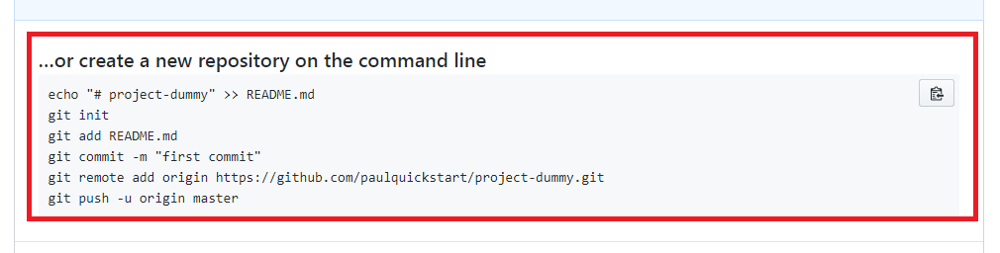

Uploading your project from local to github repository
- Create repository

2. Follow this example
3. Use these command
git init
4. Use these command
git add *
5. Use these command
git commit -m “dummy commit”
6. Use these command
Git push -u origin master
Success
Summary
- Create repository
- git init
- git add *
- git commit -m “dummy”
- Git remote add origin https://github.com/paulquickstart/project-dummy.git
- Git push -u origin master